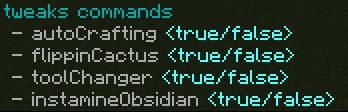
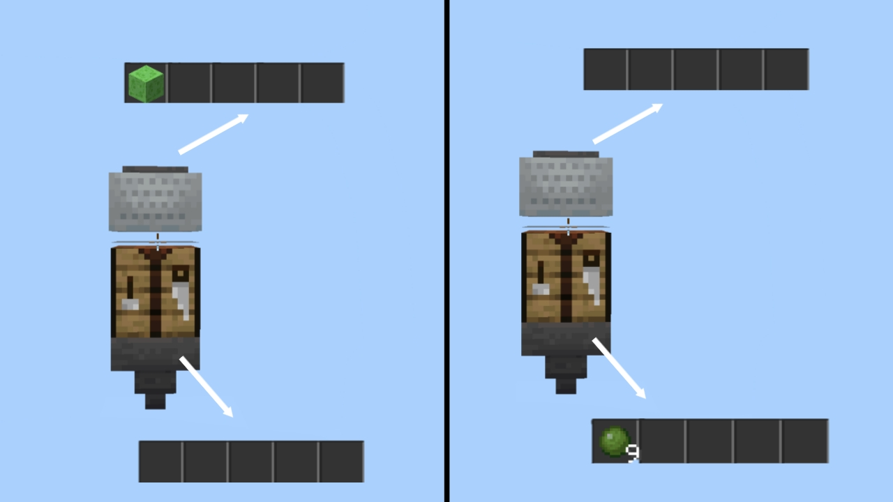

Módulo Entity
¿Qué es?
El módulo Tweaks es el responsable de proporcionar calidad de vida al juego mediante funciones.
Comandos
Los comandos disponibles en el módulo Tweaks son los siguientes:

Cada comando puede habilitar o deshabilitar una función del módulo.
Funciones
Autocrafting
El autocrafting es una manera de optimizar tiempo a la hora de craftear << fabricar >> items o bloques, puesto que todo esto se hará de manera automatica cuando una vagoneta con embudo / tolva contenga la cantidad exacta de ingredientes de una receta.
El funcionamiento de dicha función es el siguiente:
- Vagoneta arriba de mesa de crafteo.
- Mesa de crafteo arriba de embudo / tolva.
- Vagoneta contener items exactos.
- Receta fabricada aparece en el embudo / tolva.

Flippin Cactus
El flippinCactus es una herramienta que proporciona la capacidad de rotar componentes de redstone en todas sus direcciones posibles (Norte, Sur, Este, Oeste, Abajo y Arriba) esto con la finalidad de tener todas las posiciones de los componentes desde una misma direccion.
Los componentes compatibles con flippinCactus son los siguientes:
> piston - piston pegajoso
> dispensador - soltador
> comparador - repetidor
> observador - tolva
Tool Changer
El toolChanger << Cambiador de herramientas >> es una función que permite cambiar a la herramienta adecuada acorde del material del bloque que se está picando en ese momento, por ejemplo:
- Piedra > Pico
- Madera > Hacha
- Tierra > Pala

Instamine Obsidian
Normalmente, un bloque de obsidiana tarda aproximadamente 8 segundos para su ruptura, con está función es posible minar obsidiana de manera instantanea.
El proposito de está función es proporcionar mayor facilidad a la hora de eliminar lagos de lava con agua, pues dicha lava se convertira en obsidiana y con la función se podra limpiar la zona de manera rapida y eficiente.